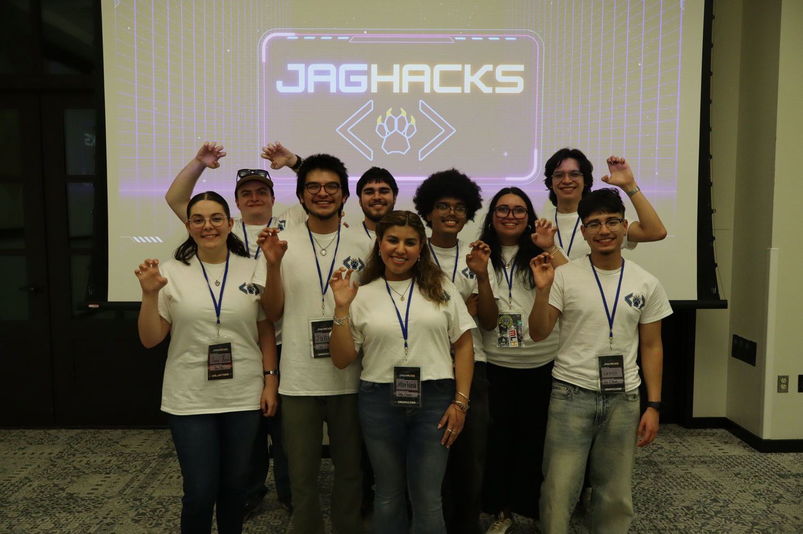
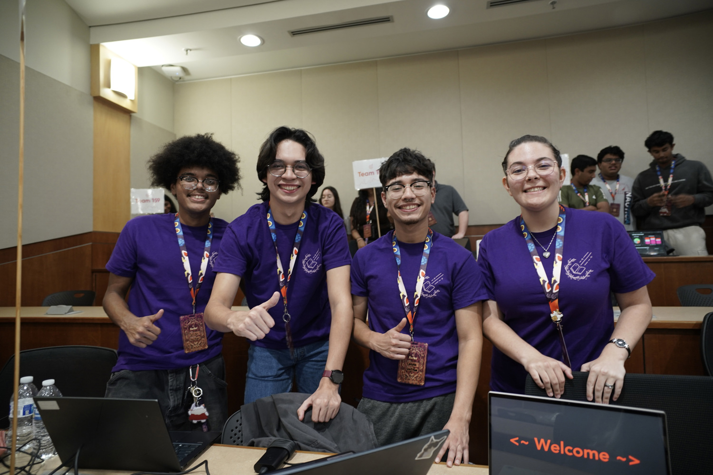
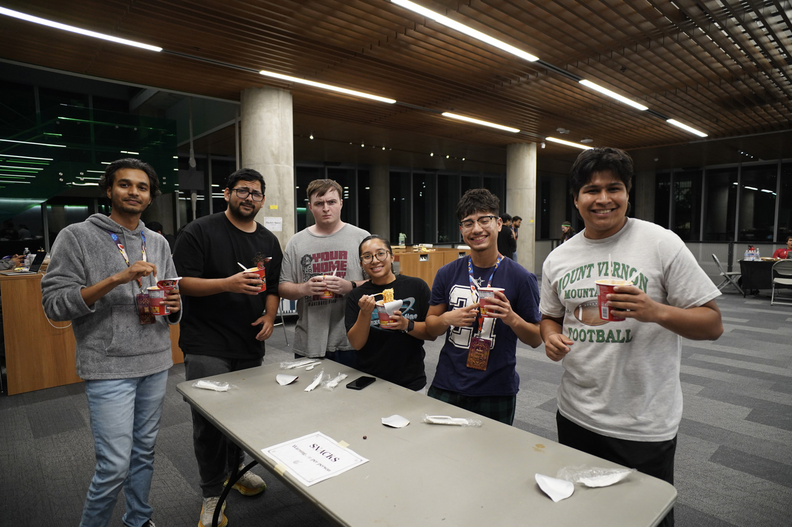
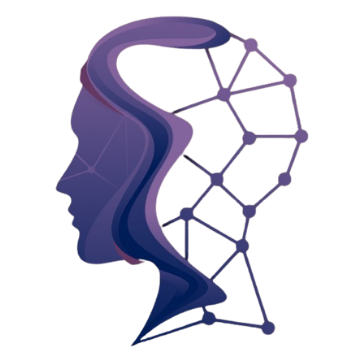

Association for Computing Machinery
Student Chapter
The ACM Student Chapter at Texas A&M University-San Antonio is the official student organization for Computer Science, Cyber Security, Information Technology, and other technology-focused students.
We help students develop programming, networking, artificial intelligence, and leadership skills through hands-on projects, hackathongs, workshops, guest speakers, competitions, and networking opportunities that prepare members for internships and careers in the technology industry.

About ACM Student Chapter
The Association for Computing Machinery (ACM) Student Chapter at Texas A&M University-San Antonio connects students who are passionate about computer science, artificial intelligence, data science, web development, networking, and emerging technologies.
Our organizations provides opportunities to collaborate on technical projects, attend industry workshops, participate in hackathons, hear from technology professionals, build professional networks, develop leadership experience, and prepare for successful careers in computing and information technology.
Whether you're a beginner learning to code or an experienced developer, ACM welcomes students from every skill level.


Sub Organizations
ACM-W
ACM-W at Texas A&M University-San Antonio is dedicated to supporting, empowering, and advancing women in computing. Through mentorship, networking events, technical workshops, professional development, and community outreach, ACM-W encourages women to pursue successful careers in computer science, cybersecurity, software engineering, artificial intelligence, information technology, and related STEM fields.
Our organization promotes an inclusive and collaborative environment where every student has the opportunity to learn, lead, and succeed.

Biggest Events
JagHacks
JagHacks is ACM's annual hackathon at Texas A&M University-San Antonio where students collaborate to build innovative software, web applications, mobile apps, cybersecurity projects, artificial intelligence solutions, and other technology projects while gaining valuable teamwork and problem-solving experience.